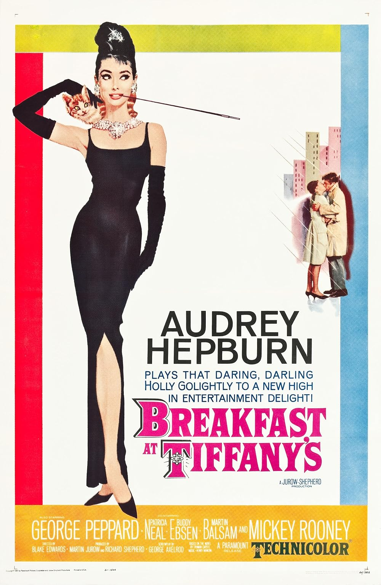

Breakfast at Tiffany's
34th Academy Awards
(Oscars 1962)
5 Nominations, 2 Awards
| Nominations | ||
|---|---|---|
| Category | Nominees | Result |
| Actress | Audrey Hepburn | Nominated |
| Writing (Screenplay--based on material from another medium) | George Axelrod | Nominated |
| Art Direction (Color) | Hal Pereira, Ray Moyer, Roland Anderson, and Sam Comer | Nominated |
| Music (Music Score of a Dramatic or Comedy Picture) | Henry Mancini | Won |
| Music (Song) "Moon River" |
Henry Mancini and Johnny Mercer | Won |